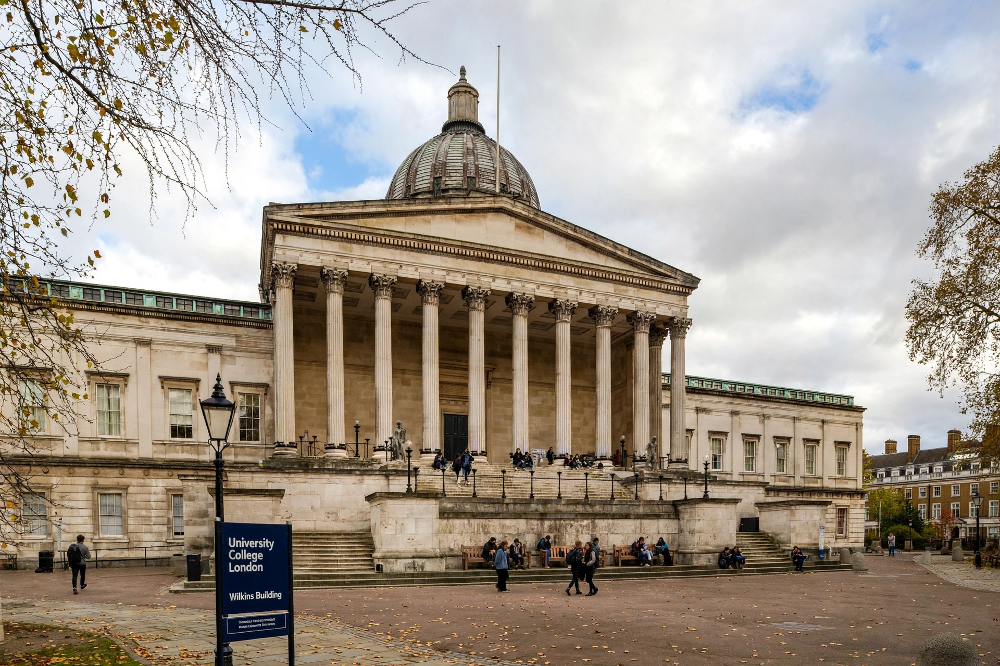

University College London (UCL) is a public research university in London, England. Founded in 1826 as London University, it was the first university institution in England to admit students regardless of religion and one of the first to admit women on equal terms.

| University College London | |
|---|---|
| Motto | Cuncti adsint meritaeque expectent praemia palmae |
| Established | 1826 |
| Location | Bloomsbury, London, England |
| Students | c. 51,000 |
| Member of | University of London, Russell Group |
Inspired by Jeremy Bentham's utilitarian ideas, UCL became a constituent college of the University of London in 1836. Its main building, the Wilkins Building with its Ionic portico, stands on Gower Street in Bloomsbury. Bentham's auto-icon is famously kept at the university.
UCL has 11 faculties, over 100 departments, and is consistently ranked among the world's top universities. Alumni and staff include 30 Nobel laureates, including Francis Crick. It merged with several medical schools, including Middlesex and Royal Free.
Facilities include the Slade School of Fine Art, Bartlett School of Architecture, and UCL East in Stratford. See University of London and London.